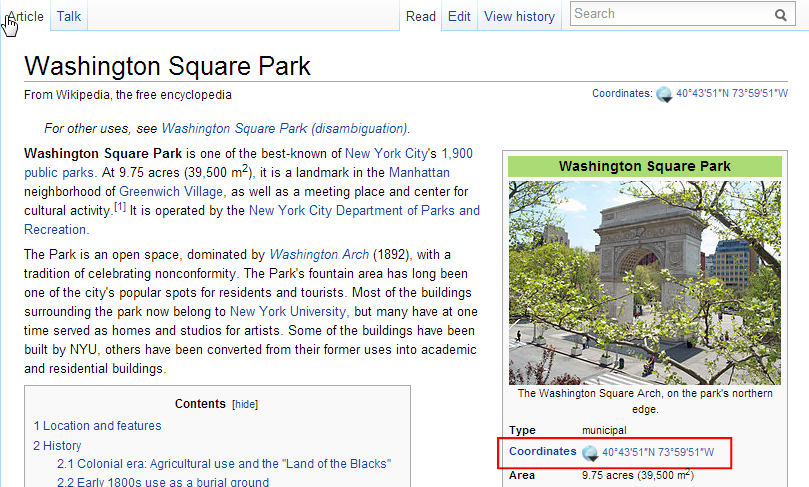
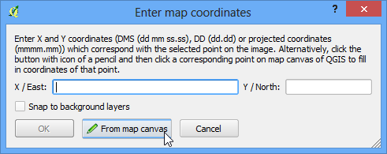
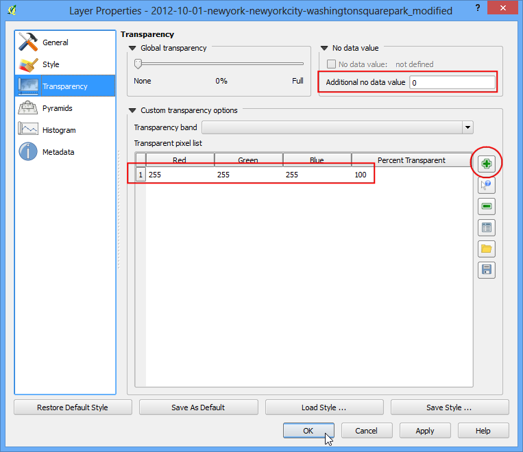

Привязка аэрофотоснимков
[ Download PDF A4
Letter ]
В учебнике Основы Привязки мы рассмотрели основной процесс географической привязки в QGIS. Этот метод включает чтение координат с Вашей отсканированной карты и его ручной ввод. Но часто у Вас не будет координат на карте, либо Вы захотите привязать изображение. В этом случае Вы можете использовать другой источник привязки в качестве входных данных. В этом уроке Вы узнаете, как использовать существующие открытые источники данных в процессе привязки.
Обзор задачи
Мы привяжем воздушный снимок высокого разрешения к местоположению, используя опорные координаты из OpenStreetMap.
Вы научитесь также
загружать общедоступные снимки с очень высоким разрешением;
использовать модуль OpenLayers в QGIS;
преобразовывать координаты из одной проекции в другую, используя инструмент командной строки cs2cs;
использовать существующий слой с геопривязкой для добавления опорных точек;
устанавливать пользовательское пустое значение для слоя.
Получение данных
В этом уроке мы будем использовать великолепные снимки с воздушных змеев и шаров, сделанных Общественной лабораторией. Они также делают привязанные версии изображений, но мы возьмём непривязанное JPG изображение и пройдём процесс привязки в QGIS. Если вам нравятся предоставленные снимки, вы можете посмотреть больше снимков в Google Планета Земля.
Загрузите JPG изображение Вашингтон-Сквер-парка в Нью-Йорке. Вы можете щелкнуть правой кнопкой мыши на кнопке JPG и выбрать Сохранить ссылку как....
Методика
Для этого урока мы будем использовать слой OpenStreetMap в качестве опорного слоя. Установите модуль OpenLayers из меню . См. Использование модулей расширения для получения дополнительной информации об использовании модулей в QGIS.

После установки перейдите в . Это добавит слой предварительно обработанных плиток, созданных из данных OpenStreetMap.

Так вы загрузили слой OpenStreetMap в QGIS. Заметьте, что система отсчёта координат (СОК) для это слоя установлена на EPSG 3857 Pseudo Mercator. Это важно, так как координаты в этом слое будут в этой СОК.

Теперь задача состоит в том, чтобы найти общую близость к области, к которой мы выполняем привязку. Вы можете просто использовать перемещение и масштабирование, чтобы найти нужную область на OpenStreetMap. Но есть ещё один инструмент, который может вам помочь. Мы знаем, что у нас изображение Вашингтон-Сквер-парка. Если Вы поищете это место, Вы сможете найти его страницу на Википедии. Там указаны его координаты.

Вы можете заметить, что координаты указаны в градусах/минутах/секунд и являются широтой и долготой. Но так как наш слой находится в проекции Mercator’а, нам будут нужны координаты Mercator’а, чтобы определить местонахождение парка. С этим может помочь инструмент командной-строки cs2cs. Если вы установили QGIS установщиком OSGeo4W, он у вас уже есть. На Linux и Mac он тоже идёт вместе с QGIS. Откройте терминал и напишите cs2cs, чтобы проверить его наличие. Пользователи Windows могут найти терминал в .

После того, как вы убедились, что инструмент cs2cs существует в вашей системе, пора конвертировать широту и долготу в координаты Mercator. Для работы этого инструмента вам нужно указать исходную и целевую СОК. СОК может быть записана как строка PROJ4 или EPSG код. Так как мы уже знаем код EPSG для наших СОК, мы будем использовать второй вариант. Самый простой способ использовать инструмент - ввести координаты прямо в командную строку. Обратите внимание, что инструмент принимает координаты в порядке XY, поэтому мы должны ввести Долготу Широту. Введите следующую команду в терминале и нажмите Ввод. Обратите внимание, что мы должны избегать кавычки (”) и обратную косую черту (\). После того, как Вы нажмёте Ввод, Вы увидите, как cs2cs обработает координаты и выдаст координаты в СОК EPSG 3857.
echo "-73d59'51\" 40d43'51\"" | cs2cs +init=EPSG:4326 +to +init=EPSG:3857
-8237364.02 4972720.34 0.00

Скопируйте эти координаты и переключитесь на QGIS. В нижней части окна QGIS Вы увидите текстовое поле с надписью “Координаты”. Введите туда X,Y координаты и нажмите Ввод. Вы увидите, как карта сдвинулась, но не увеличилась. Для увеличения области, выберите масштаб 1:25000 в выпадающем меню масштаба (рядом с координатами) и нажмите Ввод.

Вуаля! Теперь вы видите Вашингтон-Сквер-парк на вашем холсте. Настало время гео-привязки. Запустите геопривязчик из . Если у вас нет этого пункта меню, включить плагин Геопривязчик GDAL из .

В окне Геопривязчик, перейдите в . Найдите скачанное JPG изображение и нажмите Открыть.

В :Выбор системы отсчёта координат выберите EPSG:3857 Pseudo Mercator

Теперь нажмите на Добавить точку на панели инструментов и выберите легко узнаваемое место на изображении. Углы, пересечения, столбы и т.п. хорошо подходят в качестве контрольных точек.

Как только Вы нажмёте на изображение в контрольной точке, Вы увидите всплывающее окно с просьбой ввести координаты на карте. Нажмите на кнопку С карты-холста.

Найдите то же место в Вашем опорном слое, т.е. слое OpenStreetMap, и нажмите туда. Координаты появятся автоматически от Вашего нажатия на карту-холст. Нажмите ОК. Так же выберите хотя бы 4 точки на изображении и добавьте их координаты из опорного слоя.

Теперь перейдите в .

Выберите режим, показанный ниже. Убедитесь, что включена опция Загрузить в QGIS по окончанию. Нажмите ОК. В окне Геопривязчик перейдите в . Это начнёт процесс деформации изображения, используя контрольные точки, и создания целевого растрового изображения.

Как только процесс завершится, Вы увидите привязанный слой в QGIS. Если все прошло хорошо, Вы увидите, как он покрывает слой OpenStreetMap.

Чтобы наше изображение выглядело ещё лучше, давайте уберём белые и чёрные пиксели. Нажмите правой кнопкой мыши по слою с изображением и выберите Свойства.

Переключитесь на вкладку Прозрачность. Мы хотим указать, что любые белые или чёрные пиксели являются пустыми и должны быть прозрачными. Введите 0 в Пустое значение. Также, в Пользовательские настройки прозрачности, нажмите кнопку + и укажите 255 в качестве прозрачных пикселей. В поле Процент прозрачности введите 100. Нажмите ОК.

Теперь Вы будете видеть ваше геопривязанное изображение поверх основного слоя.